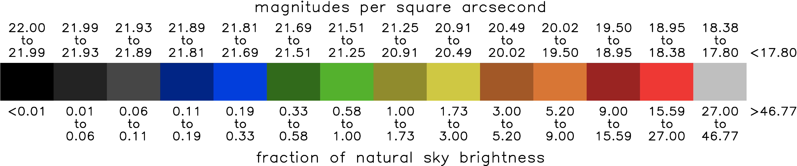

Color Scale
All mentions of sky brightness below refer to brightness at zenith, which means straight up.
Light Pollution Zone
The Light Pollution Zones correspond to the different colors on the atlas and are shown in the center of the color boxes above. Increasing the zone number by 1 corresponds to a factor of 3 increase in artificial light pollution. For example, going from 2a to 3a, or going from 4b to 5b both mean a factor of 3 increase. Zone numbers 1 to 7 are further divided into 2 sub-zones (a or b). The sub-zones equally divide interval and so they correspond to a factor of 1.73 increase (1.73 ≈ square root of 3). The one exception to the factor of 3 change with zone number is zone 0, which is just an arbitrary small number chosen by Pierantonio Cinzano in the first light pollution atlas.
Note that changes in hue (blue vs green vs yellow, etc) correspond to changes in the number, and changes in lightness within a single hue correspond to the letter (a or b). One can also refer to the Light Pollution Zone by color (i.e. dark blue, light blue, etc) but the number and letter notation are better for color blindness.
Light Pollution Index
The Light Pollution Index (LPI) is the most intuitive metric because it relates artificial brightness to an unpolluted night sky. The Light Pollution Index is defined as the ratio between artificial sky brightness and natural sky brightness. An LPI of 0 corresponds to a pristine sky. An LPI of 1 means that artificial brightness is equal to natural brightness (= boundary between Zone 3b (light green) and 4a (dark yellow)). When LPI < 1, natural sources (stars, zodiacal light) are more important than artificial sources. When LPI > 1, artificial sources are more important. In a city, the LPI is typically 30 or more, meaning artificial light is 30 times greater than natural! For this metric we take the natural sky brightness as 22.0 magnitudes per square arc-second. In reality the natural brightness can change from night to night due to variations in airglow.
Magnitudes per Square Arc-second
Astronomers measure brightness with the magnitude scale which runs opposite to other scales: darker values are greater than brighter values. It is derived from a system by ancient Greek astronomer Hipparchus where the brightest stars in the sky were denoted magnitude 1 and the faintest naked-sky stars are magnitude 6. Modern astronomers later refined the system and defined a difference in 5 magnitudes as a factor of 100 in brightness. As currently defined, the brightest stars in the sky have negative magnitude and the faintest stars observable by the naked eye are greater than 6.
For a non-point source of light, like the background sky brightness, the brightness per area of sky rather than just brightness alone is the proper way to define brightness unambiguously. Astronomers measure angular distance of the sky using arc-seconds and arc-minutes and area of the sky using square seconds and square arc-minutes. Here we take the background sky as 22.0 magnitudes per square arc-second. In more intuitive terms, this brightness is equivalent to one 6th magnitude star per area of the full moon. As the sky becomes more light polluted the magnitudes per square arc-second goes down in number (see color key at top of this page). The natural sky brightness is a combination of airglow (recombination of atoms in the upper atmosphere, which were photo-ionized by the Sun during the day), Zodiacal Light (sunlight scattered by dust in solar system. Most prominent near sun on ecliptic, but in fact spans the entire sky) and scattered starlight. Airglow is quite variable so the true natural background sky brightness varies from night to night and location to location. Airglow increases during solar maximum so dark locations will have brighter skies during solar maximum (which is ongoing as of 2025). Bright locations in cities are swamped by artificial light so this variability is visually undetectable.
Bortle Scale
The Bortle Scale is a distinct, subjective evaluation of the night sky using your eyes alone. The relationship between the Bortle scale and brightness at zenith is discussed here. I do not recommend conflating the two.
For more information contact:
David Lorenz
dlorenz@wisc.edu